en
ru
Портфолио
Логинов Ярослав Владимирович
Statica 5.0
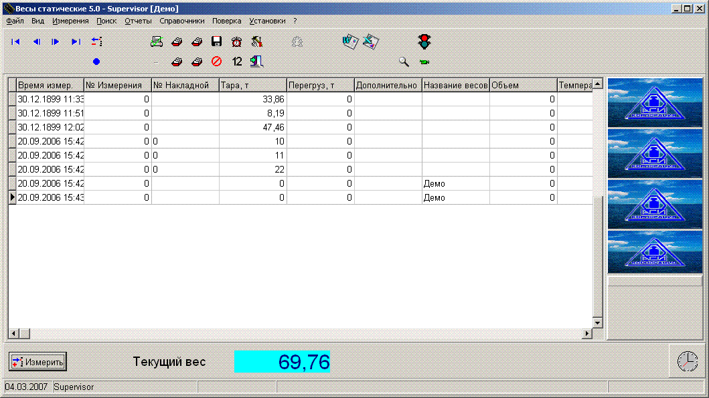
Программа "Весы статические". Назначение: взвешивание вагонов и БЕЛазов в порожнем и груженом состоянии.
Программа работает примерно с 15 типами датчиков, запись данных осуществляется в БД MSAccess.
В программу внедрен просмотр видео с камер видеонаблюдения в реальном времени и сохранение картинок при взвешивании.
Обеспечивает синхронизацию данных с БД на сервере. БД любая (через ADO), использовались БД MS SQL, Oracle и Oracle Light.
2005-2006
ASIPriborWE2110

Сервис работы c весовым прибором WE2110, AxtiveX компонент.
Назначение: подключение к SCADA программам, работы с прибором из любой среды программирования.
Программа реализует удобный интерфейс работы с прибором. Внутри программы реализован подпроцесс обмена с SerialPort.
2005-2006
Liana-M
Комплекс программ "Лиана-М"
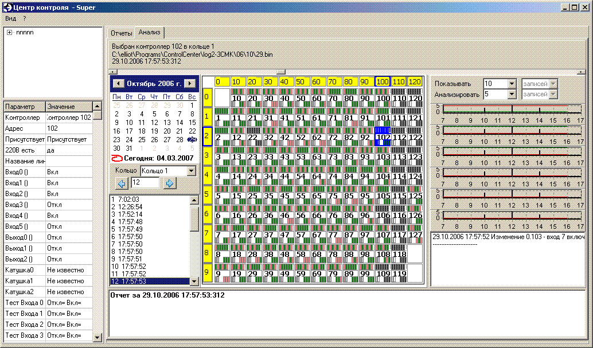
ControlCenter - Построение отчетов и анализ фалов бинарных-логов.
ControlCenterService - Сервис контроля входа дежурного в систему. Данные хранятся в БД MSAccess.
ControlUser - Программа добавления, редактирования списка модулей, списка пользователей и их прав по доступу к программам ПТК "Лиана-М"
LianaControl - Программа управления и тестирования контроллеров ПТК "Лиана-М"
LianaPowerControl - Программа управления питанием 220В на контроллерах
LianaLogConverter - Программа конвертации бинарных логов в новый тип.
LianaLoging - Программа входа в систему
LianaRuner - Программа, следящая за состоянием OPC сервера.
Также несколько тестировочных программ
2006-2007
AIAssistant
В 2007 участвовал в разработке ShareWare проекта. (Приостановлен)


История разработки AIAssistant
Archive
 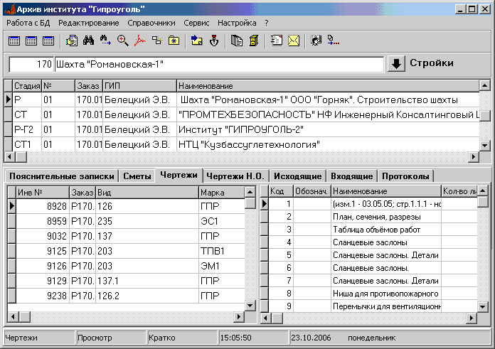
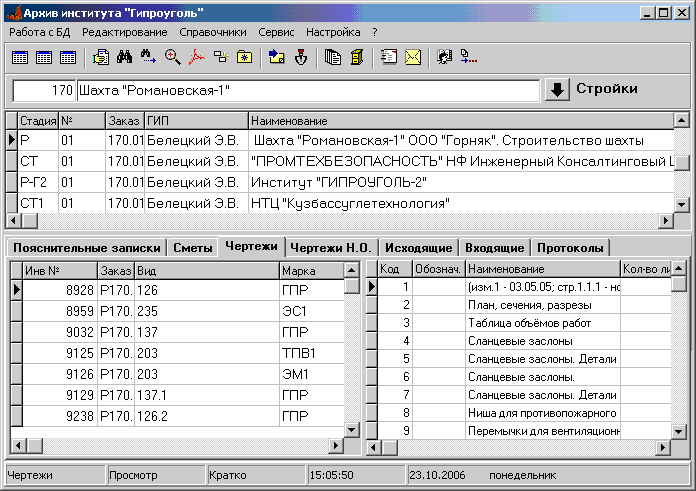
Электронный архив проектной документации
«Электронный архив»
Программа «Электронный архив» предназначена для автоматизации ведения архивов в проектных организациях.
«Электронный архив» может использоваться или только для ведения каталога бумажных документов в архиве или также для ведения электронных копий документов.
Основные функции программы
- Учет документации в архиве организации.
- Оперативный поиск документов с любого рабочего места.
- Обеспечение хранения электронных версий и копий архивных документов.
- Обеспечение просмотра электронных документов с любого рабочего места.
- Формирование различных отчетов о документах по проектам.
- Организация учета выдачи бумажных документов пользователям.
- Учет и просмотр входящей и исходящей корреспонденции.
- Отправка документов из архива по электронной почте.
В отличие от многих систем электронного документооборота программа «ЭЛЕКТРОННЫЙ АРХИВ», обеспечивая основные потребности проектной организации, сравнительно проста в установке и эксплуатации, значительно дешевле.
Программа длительное время используется в институте «Гипроуголь» и постоянно развивается.
Документация и демо версия на сайте giprougol.ru
2008-2010
SysProj
Система учета и планирования проектных работ


 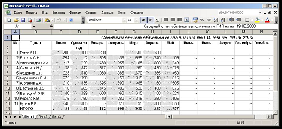
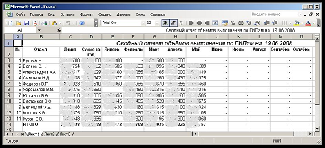
Возможности системы
- Разграничение уровня доступа для пользователей
- Учет договоров и операции над договорами
- Контроль выполнения по договорам (файлы договоров формируются автоматически из шаблона Word)
- Акты
- Счета
- Оплаты
- Накладные
- Справочники
- Отчеты (строятся автоматически в MS Word и MS Excel в разрезе по направлениям, ГИПам, заказчикам, а так же сводные)
2008-2010
Программный комплекс "Вентиляция шахт"
Программный комплекс состоит из нескольких взаимодействующих программ.
Кроме этого, программа VentSys предоставляет возможность хранения замеров и расчетов в единой БД (используется Firebird, но можно использовать и другую SQL БД).
VentCad
Схема вентиляции. Распределение воздуха по горным выработкам

Функциональные возможности:
- естественное распределения воздуха по заданным характеристикам сети и вентиляторов;
- оптимальное распределение воздуха для обеспечения потребителей необходимым количеством воздуха;
- расчет устойчивости проветривания;
- расчет устойчивости проветривания при пожарах;
- подготовка и расчет реверсивных режимов проветривания;
- расчет времени распространения пожара;
- расчет концентраций газа;
- ведение расчетов на схеме вентиляции.
Функциональные возможности схемы вентиляции:
- программа представляет собой специализированный графический редактор для работы со схемой вентиляции (рисование линий, полилиний, текста, условных обозначений, перемещение и изменение свойств объектов и надписей, вывод на печать (весь чертеж или выбранный фрагмент) с автоматической разбивкой по листам);
- отображение расчетных расходов;
- отображение результатов замеров воздуха и метана;
- отображение позиций и текста плана ликвидации аварий;
- отображение опрокинутых и загазованных ветвей после пожара;
- отображение маршрутов движения горнорабочих и ВГСЧ.
2008-2010
VentPv
Проветривание подготовительных выработок
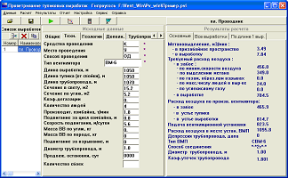
Функциональные возможности:
- полная реализация "Руководства ..." для всех условий и бассейнов;
- расчет по природной газоносности и фактическому газовыделению;
- одновременный расчет нескольких выработок;
- разработка проекта установки ВМП для одной выработки;
- выбор диаметра трубопровода, вентиляторов и способа их соединения;
- вывод графика работы вентиляторов;
- возможность просмотра полного протокола расчета.
2008-2010
VentOz
Расчет газообильности и вентиляции очистных забоев
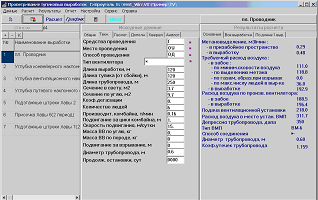
Функциональные возможности:
- полная реализация "Руководства ..." для всех условий и бассейнов;
- расчет газовыделения свиты пластов;
- расчет по природной газоносности и фактическому газовыделению;
- расчет параметров изолированного отвода метана;
- одновременный расчет нескольких забоев;
- возможность просмотра полного протокола расчета.
2008-2010
Degassing
Расчет дегазации шахт
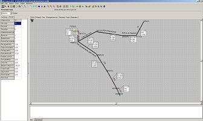
Функциональные возможности:
- реализация "Методических рекомендаций ..." (РД-15-09-2006);
- создание (вычерчивание) схем дегазации;
- расчет расходов метановоздушной смеси и диаметров трубопроводов;
- расчет давлений для принятых (существующих) диаметров трубопровода;
- расчет расходов воздуха и давлений в трубопроводе для сложных схем (по модели естественного распределения смеси по сети).
2008-2010
VentSys
Система расчета и контроля вентиляции шахт


 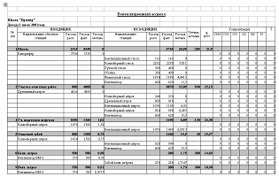
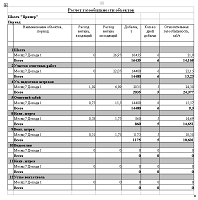
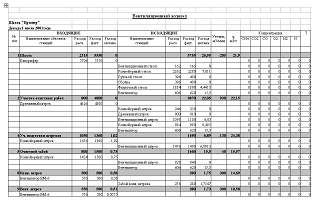
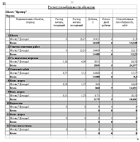
Система проектирования и контроля вентиляции предназначена для автоматизации вентиляционных расчетов и контроля состава и количества воздуха в шахте.
Система обеспечивает автоматизацию всего комплекса расчетных и учетных работ, регламентированных Правилами безопасности, различными нормативными и методическими документами при проектировании и эксплуатации угольных шахт.
Основные функции системы по проектированию (расчету) вентиляции:
- расчет газообильности очистных и подготовительных выработок по природной газоносности;
- расчет газообильности очистных и подготовительных выработок по фактическому газовыделению; расчет вентиляции тупиковых выработок (с выбором вентиляторов местного проветривания);
- расчет вентиляции очистных участков, в том числе для схем с газоотсосом;
- расчет распределения воздуха по горным выработкам в нормальном и аварийном режимах.
Основные функции системы по контролю:
- учет замеров расхода воздуха и концентрации метана;
- учет проб воздуха;
- учет загазований;
- контроль изоляционных перемычек и пожарных участков;
- контроль вентиляторных установок
- импорт и контроль данных системы Микон.
Отчетные функции системы:
- установление категории шахты по газу;
- формирование вентиляционного журнала (формы 1, 2, 3);
- формирование журналов по замерам и осмотрам;
- формирование документов по результатам расчетов;
- ведение плана ликвидации аварий.
Сервисные функции системы:
- формирование и ведение схемы вентиляции;
- выгрузка базы для передачи инспектирующим организациям;
- ведение нормативных документов по вентиляции.
Применение системы обеспечит:
- правильное и единообразное использование всех методических положений различных руководств по расчету вентиляции шахты;
- повышения объективности замеров состава и расходов воздуха;
- необходимую взаимосвязь между замерами и расчетами, возможность автоматического использования результатов замеров при проведении расчетов;
- возможность удобной и оперативной передачи результатов вентиляционных расчетов и замеров инспектирующим органам.
2008-2010
Ventilation
Новая программа для комплексного расчета вентиляции шахт. В одной программе объединены: схема вентиляции, расчет очистных и тупиковых выработок.
"Вентиляция шахт 2010-2013"
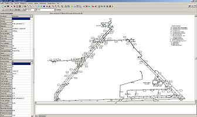
 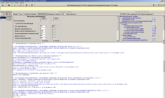
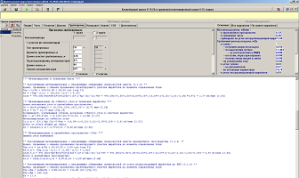
2010-2013
www.giprougol.ru/technologies/software/ventsh
© Prof1983 2007-2014
24.11.2008-06.05.2014


{kind=link}
{kind=link}
{kind=link}
{kind=link}
{kind=link}
{kind=link}
{kind=link}
{kind=link}
{kind=link}